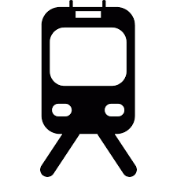

Kochi, also known as Cochin is the biggest city in the state of Kerala. This city is being used as a part and the gateway to India since the 14th century. To explore and see the best tourist places in Kochi, steep in the rich glorious history, nurtured by the foreign powers like Arabs, Portuguese, Chinese, British, and Dutch for centuries, it’s a must visit city for those who want to learn about the rich history of the country as the Colonial India and its trading prowess during the earlier times. The houseboats and boating in the tranquil backwaters make visiting Kochi an experience of the lifetime.
KOCHI TOURISM
KOCHI
TRAVELLING TO KOCHI
By Air
By Train
By Road
IDEAL TIME TO VISIT
Summer season (March to June)
Summer is the most economical season for a Kochi trip, as it is the offseason for the city. In summer the temperatures rise quite high, almost touching 37°C. The hot and humid climate in the daytime is not favorable for outdoor sightseeing. In summer Kochi is relatively less crowded. The best part is that you will get amazing discounts on everything.
the scent of monsoon (July to September)
Monsoon is one of the ideal seasons for planning a Kochi trip. Kochi features a tropical monsoon climate. This season is also not a peak season but is better than summer. However, the atmosphere remains humid but one can enjoy outdoor sightseeing. Kochi comes alive during the rains and one can find rain-washed greenery all around. During monsoon, one can get good deals on hotels and even on flights.
Winter season (October to February)
Winter is one of the best as well as the peak time in Kochi. The pleasant climatic conditions offer ample warmth to unwind on the beaches and enjoy outdoor sightseeing. Many visitors who are reluctant to the heat or just bored of the country's sweat-inducing weather, prefer to visit Kochi during this time. This season is best to enjoy a family trip.
POPULAR TOURIST SPOTS
1. Fort Kochi
A small fishing hamlet later converted to the first European township in India, today features amongst Kochi tourist places due to the vibrancy of this place. The Fort Kochi beach looks divine during sunset.The old houses of this place have been built by British traders, thus the Dutch cottages, split farms all reminisce of an era bygone. The shops, locals and streets are a place where you can truly unwind.
2. Kerala Folklore Museum
the Kerala Folklore Museum is a place where you can see everything from antiques and sculptures to tribal art and folklore installations. Home to various musical instruments, costumes and masks, and Stone Age utensils, you can also buy and sell antique items here. This is a must place to visit when you are in the city.
3. Cherai Beach
This charming beach is neatly nestled in the suburbs of Cherai, which is one of the most visited beaches due to its serenity and clean environ. The low tides and slow waves make it a highly recommended beach for swimming and other forms of water sports. It has an alluring walkway along the beach dotted with greens and sufficient places for seating. Chinese fishing nets on the waterfront and thick coconut groves add charm to this place.
4. Mattancherry Palace
Mattancherry Palace (Also known as the Dutch Palace), was constructed in 1545 by the Portuguese as a present to King Veera Kerala Verma of the Kochi dynasty. It is the finest example of the confluence of colonial and Kerala style of architecture, with 4 individual wings and 1 patio in between. There is also a temple dedicated to Pazhayannur Bhagavathy, the deity of the royal family.
5. Mangalavanam Bird Sanctuary
This ecologically sensitive area at the heart of Kochi is popular for the many migratory birds that flock this place during the migratory season and also supporting the mangrove forests of this area. It is thus considered to be the green lungs of Kerala thereby keeping the pollution of the city at bay. The rich flora and fauna of the Mangalavanam Bird sanctuary are of interest to many nature enthusiasts and environmentalist alike. A whopping 72 different species of birds have been located in this area alone adding to the biodiversity of this place.
6. Chottanikara Bhagavathy Temple
This is the most visited and highly revered Hindu temple down south. The temple is believed to be 1500 year old where the goddess Chottanikkara Bhagavathy Amman and the Keezhu Kaavu Bhadrakali Amman are worshipped as healing goddesses. A continuous practice of worshipping the deities in this temple is believed to cure life-threatening diseases. The temple premises houses a Pala tree which is pierced with thousands of nails, the reason being patrons who are cured of mental maladies drive a nail across the tree
7. Kerala Kathakali Centre
Kathakali is a combination of literature, painting, music, dance and acting and all the five forms culminate to this charming dance form done with grace and command.The Kerala Kathakali centre was founded in 1990 and aims to popularize the traditional art form of Kerala, discover new talents and train the existing performers with rigorous discipline and dedication. This is a place to visit in Kochi if you are keen on learning the dance form directly from the experts. You may also be privy to the daily shows organised here by talented participants expert in their field of art.
8. Wonderla Amusement Park
Wonderla Kochi simply is not just an amusement park, but a world of breath-taking charm. It’s a place to celebrate the smaller moments and share big wonders. This is one of the largest amusement parks in Kochi having water rides, land rides, 3D rides and several other fun rides to keep the visitors entertained. Caterpillar village, adventures of Chikku, Dashin cars, Fire Brigade, Sky wheel, Windmill and wonder splash are a few of its major attraction. Weekends are filled with locals having a ball of a time with friends and family.
9. Lulu Shopping Mall
The Lulu Shopping Mall which is one of the largest shopping malls in India is an invite to the world of happiness. With 225 outlets, 2,500 seater food court and the presence of top 100 brands and 11 fine-dining restaurants, this is definitely a place to pamper yourself. The mall also houses a 9 screen Cineplex, amusement rides, one of the largest ice skating rink and a 12-lane bowling alley. Housed within the campus of Hotel Marriot, it offers convenience and luxury to domestic and international tourists.
Cochin International Airport (CIAL), situated about 25 km north of Kochi city at Nedumbassery, handles both domestic and international flights. One can fly to Singapore, Middle East and Malaysia and to most major Indian cities. 
Kochi has two major railway stations – Ernakulam Town and Ernakulam Junction (locally known as the North and South railway stations respectively).
Kochi is well connected to neighboring cities and states. The NH47 (Salem-Kanyakumari) passes through Kochi. The NH17 connects the city to Mumbai, Kozhikode, Mangalore, Bengaluru, Chennai and Goa.